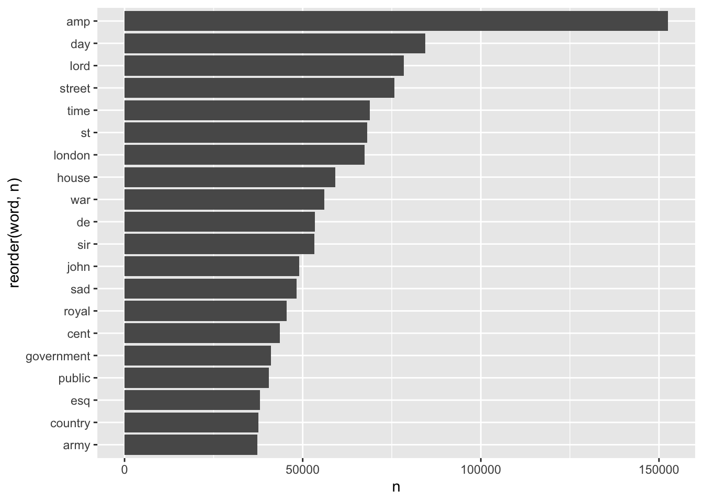
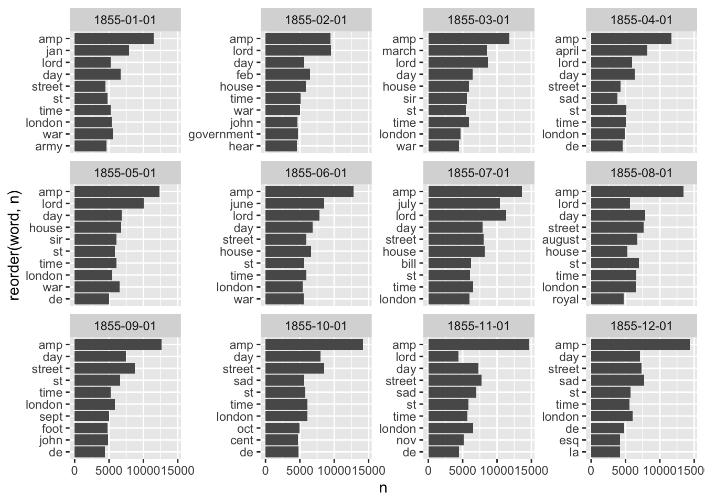
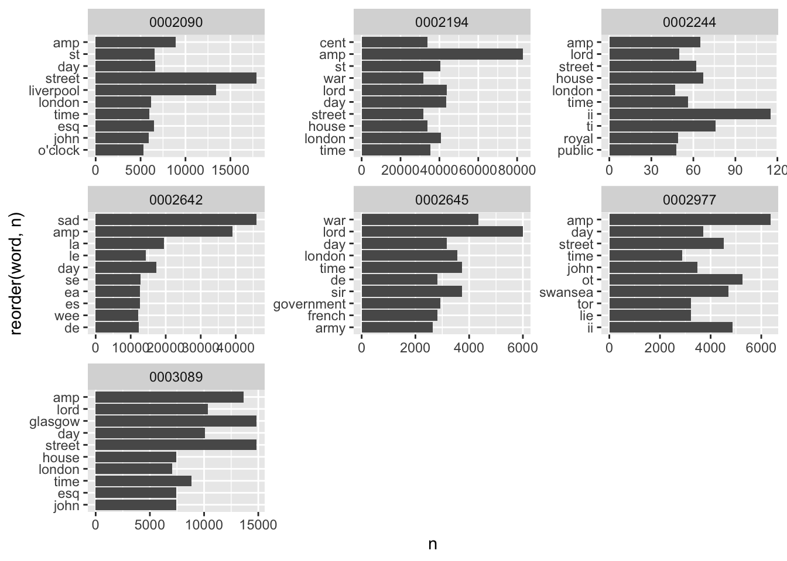
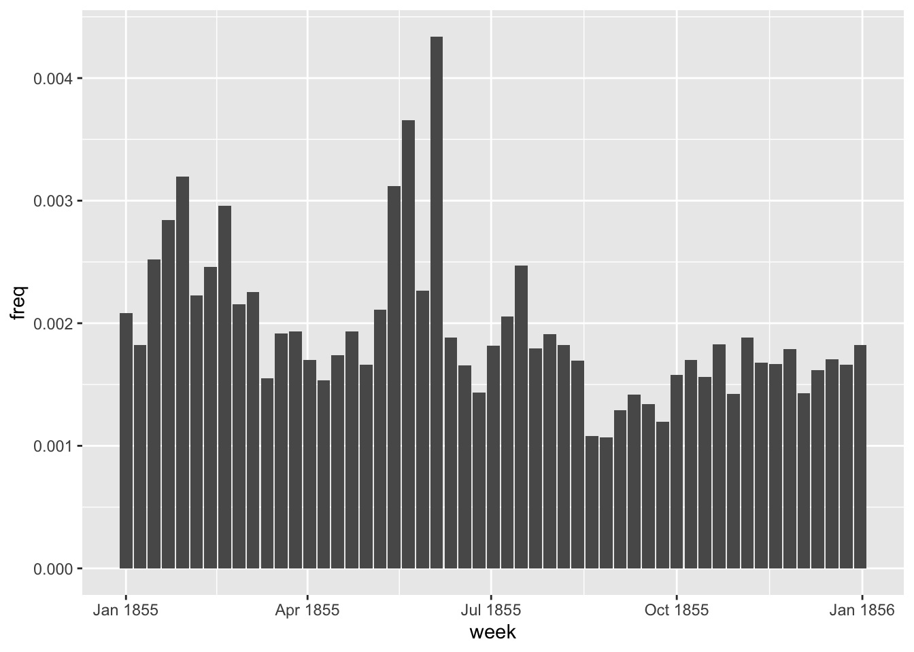
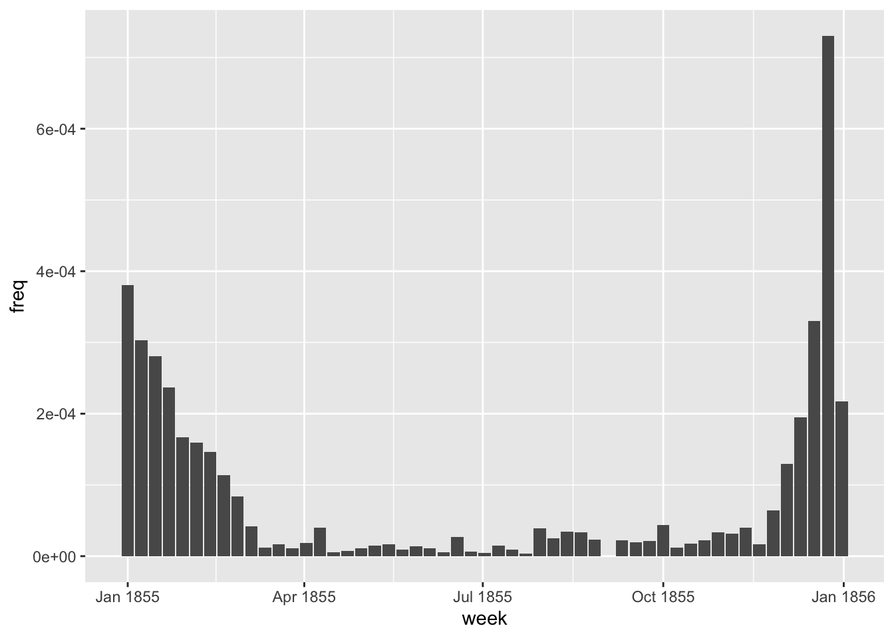
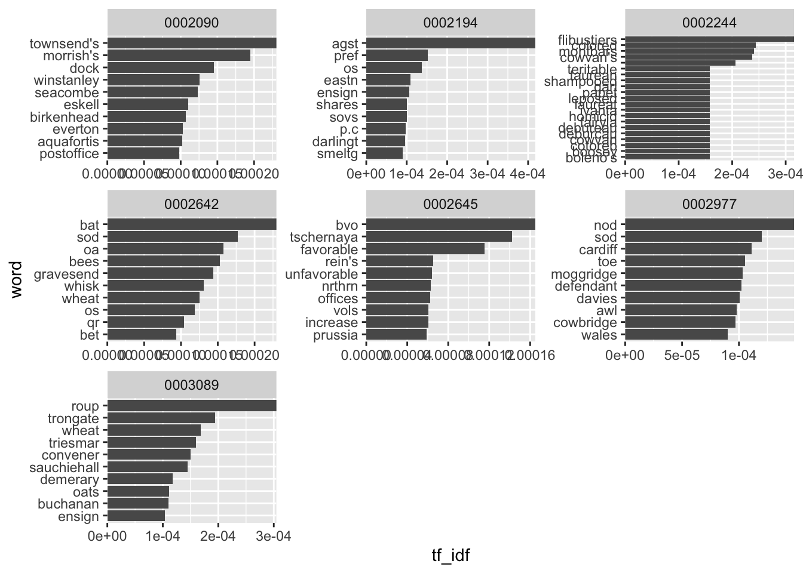
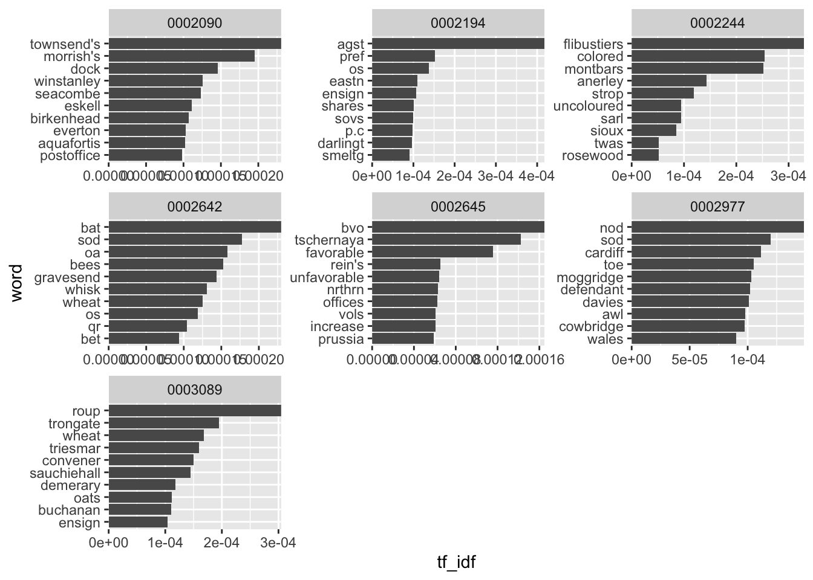
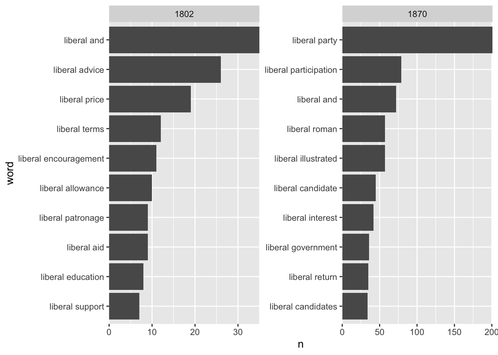

install.packages('tidyverse')
install.packages('data.table')
install.packages('tidytext')
install.packages('tidytable')10 N-gram Analysis
The first thing you might want to do with a large dataset of text is to count the words within it. Doing this with newspaper data may help to discover and quantify trends, understand more about events, and make comparisons between the language in several titles. In this tutorial, we’ll use text mining to look for changing patterns in word use across the months of a single year.
We should also think about the specific nature of each newspaper, and how this will affect the results. These are from a single year, but some are much more frequent than others. One, The Sun, is a daily, and so much more of the data comes from this title. They will also have different levels of OCR errors.
For this tutorial, you’ll make use of a few more R packages: tidyverse, which you should already have installed, data.table, and tidytext. If necessary, install these using the install.packages() command:
Once this is done (or if you have them installed already, load them:
library(tidyverse)
library(data.table)
library(tidytext)
library(tidytable)Load the news dataframe and relevant libraries
For this tutorial, you’ll need a set of .csv files containing newspaper article text in a specific format. Chapter 8 and Chapter 9 walk through the processing of downloading and creating these files. If you want to construct your own newspaper corpus and use it for this chapter, I recommend going back and checking those out. Alternatively, if you want to use a ready-made corpus, you can download a compressed file containing all the articles from a single year on the repository: 1855. This file is available on Zenodo. Once you have downloaded it, decompress it and make a note of where it is stored on your local machine.
The first step is to load all these files and turn them into a single dataframe. The command list.files(), with the parameters set below, will list all the files with the text csv in them: Swap the path= parameter for the location you have saved the .csv files, if appropriate.
news_sample_dataframe = list.files(path = "newspaper_text",
pattern = "csv",
recursive = TRUE,
full.names = TRUE)Next, import the files themselves. The function lapply is a bit like a loop: it will take list or a vector (in this case, a vector containing the file names we want to import), and run the same function over them all, storing the result as a list. In this case, we’ll run the function fread, which will read a single file into R as a dataframe. Passing it a list of filenames means it will read all of them into dataframes, and store them as a list of dataframes.
With this list of dataframes, we’ll use another function rbindlist to transform them from a list of dataframes to a single, long dataframe. Essentially, merging them together.
all_files = lapply(news_sample_dataframe, data.table::fread)
names(all_files) = news_sample_dataframe
all_files_df = data.table::rbindlist(all_files, idcol = 'filename')Make a new object, news_df, which takes the information about the newspaper found in the filename, and uses it as metadata, stored in columns.
One first step is to get the actual title names for the titles. The information in the .csv only contains a unique code, the NLP. To do this, we’ll make a small dataframe with the title names and NLP codes, and then join this to the data.
The result is a dataframe with a column for the issue date, the article number, and the full article text.
title_names_df = tibble(newspaper_id = c('0002090', '0002194', '0002244', '0002642', '0002645', '0003089', '0002977'), newspaper_title = c('The Liverpool Standard And General Commercial Advertiser', 'The Sun', 'Colored News', 'The Express', 'The Press', 'Glasgow Courier', 'Swansea and Glamorgan Herald'))
news_df = all_files_df %>%
mutate(filename = basename(filename))
news_df = news_df %>%
separate(filename,
into = c('newspaper_id', 'date'), sep = "_") %>% # separate the filename into two columns
mutate(date = str_remove(date, "\\.csv")) %>% # remove .csv from the new data column
select(newspaper_id, date, art, text) %>%
mutate(date = ymd(date)) %>% # turn the date column into date format
mutate(article_code = 1:n()) %>% # give every article a unique code
select(article_code, everything()) %>%
left_join(title_names_df, by = 'newspaper_id')# select all columns but with the article code first Text Analysis with Tidytext
The package we’re going to use for analysing the text is called ‘tidytext’. This package has many features for understanding and working with text, such as tokenising (splitting into words) and calculating the tf-idf scores of words in a group of documents. The authors of the package have published an entire book, Text Mining with R, which is a very good introduction to text analysis with R.
It’s a little different to the approach taken by, say, python, because it works on the principle of turning text into dataframes, in a format which is easy to work with in R. When we tokenise, for example, tidytext will create a dataframe which contains one row for each token. This is then easy to count, sort, filter, and so forth, using standard tidyverse tools.
Simple word counts as a method are increasingly outdated, and modern text analysis is much more likely to use more sophisticated metrics and take the context into account. But a simple statistical analysis of text is still a useful and quick way of understanding a group of documents and getting an overview of their contents. It also is often the first step in further analysis, such as topic modelling or word embeddings.
As a first step, take a look at the first few entries in the dataframe:
news_df %>% mutate(text = str_trunc(text, 500)) %>% # show just the first part of the text for displaying in a dataframe
head(5) %>% # show the first 5 rows
kableExtra::kbl()| article_code | newspaper_id | date | art | text | newspaper_title |
|---|---|---|---|---|---|
| 1 | 0002090 | 1855-06-19 | 1 | esP e allall J o Po"' .d. o f f t/' ea tice 11, P ate° s' ide r ice F r tl e i e'l.fr 't 'e ' cVi c° P tc rj t , irit'tbhe el., j t 0 P , te O P. o3g e r ti 2b111„,1,P | The Liverpool Standard And General Commercial Advertiser |
| 2 | 0002090 | 1855-06-19 | 2 | Eqp t , I , WILLIAMSON-SQUARE. i'lle . AL, --- elott,,t . in e „ - . 417 FOR TFVO NIGHTS ONLY. . 'itilltiste, Miss CUSHMAN, will appear in her rt,, shed Im Personation of u . ite lr(a , MEG MERRILIES, t 4 iiednesdaythe 20th instant and in the New Play of ACTRESS OF , PADUA, On Fainmr next, the 22nd instant. 0441 eltkertilielts.7.- T0.k 0 ,, 11 (Wednes.day). the 20th instant, Ilezr the Ncewl G UY MANNERING ' Miss ... | The Liverpool Standard And General Commercial Advertiser |
| 3 | 0002090 | 1855-06-19 | 3 | Tri C 3JI all 1101 Tau atl) AND GENERAL COMMERCIAL ADYERTIS'EI? A CARD. ATR. ENSOR, DENTIST, 171 Has REMOVED from SEEL-STRENT tO No. 51, RODNEY-STREET. 316 EMBROIDERED COLLARS at 2s. 11d., worth 4s. 3d. 170 Ditto Ditto at 2s. 6d., worth 3s. 9d. 253 Ditto Ditto at Is. 71d.. „ 2s. 3d. Also, several Cheap Lots of SLEEVES AND HABIT-SHIRTS. HARRISON BROTHERS, 60 & 62, CHURCH-STREET, Corner of Hanover-street. FLANAGAN'S EOL ... | The Liverpool Standard And General Commercial Advertiser |
| 4 | 0002090 | 1855-06-19 | 4 | A NNIVERSARY OF THE NATIONAL SCHOOLS. The ANNIVERSARY of the NATIONAL SCHOOLS connected with the Established Church will be held THIS DAY (Tuesday), the 19th instant, when a SERMON will be preached in St. Peter's Church, by the Rev. THOMAS NOLAN, M.A., Vicar of Acton ; after which a Collection will be made in aid of the Funds of the different Schools. Divine Service will commence at Eleven o'clock. THE RUSSIANS. WHAT KIND... | The Liverpool Standard And General Commercial Advertiser |
| 5 | 0002090 | 1855-06-19 | 5 | A LOT OF THE VERY BEST F RENCH PRINTED MUSLINS AT 12s. 9d. Full Dress, usually sold at 255. 6d. ; also a LARGE REGULAR STOCK Of FRENCH AND TOWN PRINTED MUSLIN'S, in all the New Designs, Fast Colours, commencing at 64. 9d. the Dress HARRISON BROTHERS, 63 & G 2, CHURCH-STREET, Corner of Hanover-street. A splendid Assortment of LONDON BRONZED TEA URNS tjr SWING KETTLES, FENDERS, FIRE IRONS, PAPER TRAYS, HIP, SPONGING, S... | The Liverpool Standard And General Commercial Advertiser |
We can see that it has a number of rows (about 97,000 if you’re using the data from the previous tutorials) and 5 columns. Each row is a different article, and the fifth column text, contains the full text of that article. You’ll also probably notice that the text itself is pretty garbled, because of OCR errors. It’s worth pointing out that because we’re looking at the first few articles, which are usually advertisements, the OCR is likely to be much worse than with ordinary articles within the paper.
As a first task, we’ll simply use the tidytext package to make a count of the words found in the data.
Tokenise the text using unnest_tokens()
The first step is to tokenise the text. This is the starting point for many of the basic text analyses which will follow. Tokenising simply divides the text into ‘tokens’: smaller, equally-sized ‘units’ of some text. A unit is often a word, but could be a bigram (a sequence of two consecutive words), or a trigram, a sequence of three consecutive words.
To do this using the library tidytext, we will pass the dataframe of text to the function unnest_tokens(). This function takes a column of text in a dataframe and splits it into tokens. The function has a set of default values, but, as we will see, we can change the function to create other types of functions.
To understand what tokenising is doing, I’ll make a dataframe containing a single ‘article’, which in this case is a single sentence.
df = tibble(article_code = 1, text = "The quick brown fox jumped over the lazy dog.")
df %>%
kableExtra::kbl()| article_code | text |
|---|---|
| 1 | The quick brown fox jumped over the lazy dog. |
To tokenise this dataframe, we’ll use the unnest_tokens function. The two most important parameters to unnest_tokens are output and input. This is fairly self-explanatory. Pass the name of the column you’d like to tokenise as the input, and the name you would like to give the tokenised words as the output.
df %>%
unnest_tokens(output = word, input = text) %>%
kableExtra::kbl()| article_code | word |
|---|---|
| 1 | the |
| 1 | quick |
| 1 | brown |
| 1 | fox |
| 1 | jumped |
| 1 | over |
| 1 | the |
| 1 | lazy |
| 1 | dog |
Run this code, and you’ll see that the dataframe has been transformed. Each word in the sentence is now on a separate row, in a new column called word. Also note that the other data (in this case the article code) is kept and duplicated.
You can also specify an argument for token, allowing you to split the text into sentences, characters, lines, or n-grams. If you split into n-grams, you need to use the argument n= to specify how many consecutive words you’d like to use.
Like this:
df %>%
unnest_tokens(output = word,
input = text,
token = 'ngrams',
n =3) %>%
kableExtra::kbl()| article_code | word |
|---|---|
| 1 | the quick brown |
| 1 | quick brown fox |
| 1 | brown fox jumped |
| 1 | fox jumped over |
| 1 | jumped over the |
| 1 | over the lazy |
| 1 | the lazy dog |
You can also use other tokenizers such as character shingles, or supply your own method for splitting the text, such as on new lines, if you have them in your text:
df = tibble(article_code = 1, text = "The quick brown fox\njumped over the lazy dog.")
df %>%
unnest_tokens(output = word,
input = text, token = stringr::str_split, pattern = "\n") %>%
kableExtra::kbl()| article_code | word |
|---|---|
| 1 | the quick brown fox |
| 1 | jumped over the lazy dog. |
Now, it’s time to do this to our article text. Create a new object, news_tokens, using unnest_tokens(), passing the text column as the input column:
news_tokens = news_df %>% unnest_tokens(output = word, input = text)
news_tokens %>% head(10) %>%
kableExtra::kbl()| article_code | newspaper_id | date | art | newspaper_title | word |
|---|---|---|---|---|---|
| 1 | 0002090 | 1855-06-19 | 1 | The Liverpool Standard And General Commercial Advertiser | esp |
| 1 | 0002090 | 1855-06-19 | 1 | The Liverpool Standard And General Commercial Advertiser | e |
| 1 | 0002090 | 1855-06-19 | 1 | The Liverpool Standard And General Commercial Advertiser | allall |
| 1 | 0002090 | 1855-06-19 | 1 | The Liverpool Standard And General Commercial Advertiser | j |
| 1 | 0002090 | 1855-06-19 | 1 | The Liverpool Standard And General Commercial Advertiser | o |
| 1 | 0002090 | 1855-06-19 | 1 | The Liverpool Standard And General Commercial Advertiser | po |
| 1 | 0002090 | 1855-06-19 | 1 | The Liverpool Standard And General Commercial Advertiser | 34 |
| 1 | 0002090 | 1855-06-19 | 1 | The Liverpool Standard And General Commercial Advertiser | d |
| 1 | 0002090 | 1855-06-19 | 1 | The Liverpool Standard And General Commercial Advertiser | o |
| 1 | 0002090 | 1855-06-19 | 1 | The Liverpool Standard And General Commercial Advertiser | f |
The result is a very large dataset of words - one row for each word in the dataset, a total of about 66 million using the tutorial data.
Speeding things up with {Tidytable}
The next step is to use tidyverse commands to count and analyse the data. However, doing this with a dataframe of 66 million rows is not ideal. For this, we’ll introduce a new package, called tidytable. Tidytable allows us to use tidyverse verbs, but it translates them into another package, data.table, behind the scenes. Data.table is much faster in most cases.
To use the tidytable equivalent to a tidyverse verb, add a period (.) just before the parentheses. For example, mutate() becomes mutate.()
Note that tidytable does not have a group_by command. Instead, you’ll use the parameter .by = within another command to specify the group you want it to apply to.
Once this is done, it is relatively easy to count and analyse the data using standard tidyverse verbs. The following will count the instances of each word and show them in descending order:
news_tokens %>%
summarise.(n = n.(), .by = word) %>%
arrange.(desc.(n)) %>% head(20) %>%
kableExtra::kbl()| word | n |
|---|---|
| the | 4483357 |
| of | 2473323 |
| to | 1674183 |
| and | 1625027 |
| a | 1097019 |
| in | 977684 |
| that | 593476 |
| at | 530306 |
| i | 529302 |
| for | 471661 |
| be | 467150 |
| was | 456650 |
| on | 454623 |
| is | 453208 |
| by | 415020 |
| it | 413959 |
| with | 341337 |
| e | 334563 |
| t | 332604 |
| 1 | 329737 |
As you can see, the top words are entirely made up of short, common words such as the, of, i, and so forth. These are unlikely to tell us much about the text or reveal patterns about the content (though they may have other uses, for example for identifying authors, but let’s ignore that for now).
To get something more meaningful out of these top results, it’s probably best to do some text cleaning.
When doing your own research, particularly using sources such as newspapers which will often look quite different and have messy OCR, you’ll often need to go back and forth, checking and adding additional cleaning and pre-processing steps to get something meaningful.
In this case, we’ll remove these short, common words (known as ‘stop words’), and also, later, do some more text cleaning.
Removing stop words
To do this, we load a dataframe of stopwords, which is included in the tidytext package:
data("stop_words")This will load a dataframe called stop_words into the R environment. This dataframe contains a column called word. We want to merge this to our tokenised data, and remove any matches.
Next use the function anti_join(). This basically removes any word in our word list which is also in the stop words list:
news_tokens = news_tokens %>%
anti_join(stop_words)Joining with `by = join_by(word)`Let’s take another look at the top words, using the same code as above:
news_tokens %>%
summarise.(n = n.(), .by = word) %>%
arrange.(desc.(n)) %>% head(20)%>%
kableExtra::kbl()| word | n |
|---|---|
| 1 | 329737 |
| 4 | 205696 |
| 0 | 200869 |
| amp | 152582 |
| 3 | 99579 |
| 6 | 84694 |
| 11 | 84643 |
| day | 84447 |
| 2 | 81151 |
| 5 | 80543 |
| lord | 78383 |
| street | 75711 |
| 10 | 73835 |
| time | 68863 |
| st | 68110 |
| 7 | 67775 |
| london | 67363 |
| house | 59095 |
| war | 56102 |
| de | 53433 |
Now the stopwords are removed, we can use the filter() command to remove any other unwanted tokens: numbers are also particularly common in newspapers (these titles often publish lists of stocks and shipping information, for example) and don’t tell us anything about the texts. Furthermore, ssome horizontal lines have been picked up by the OCR as punctuation. Let’s filter both of these out:
news_tokens = news_tokens %>%
filter(!str_detect(word, "[0-9]")) %>%
filter(!str_detect(word, "__"))The command str_detect() within `filter() removes any word which matches a given regular expressions pattern. In this case, the pattern is simply any occurence of a number. That’s a bit blunt, but it will be effective at least.
Let’s check the top words again:
news_tokens %>%
summarise.(n = n.(), .by = word) %>%
arrange.(desc.(n)) %>% head(20) %>%
kableExtra::kbl()| word | n |
|---|---|
| amp | 152582 |
| day | 84447 |
| lord | 78383 |
| street | 75711 |
| time | 68863 |
| st | 68110 |
| london | 67363 |
| house | 59095 |
| war | 56102 |
| de | 53433 |
| sir | 53288 |
| john | 49003 |
| sad | 48236 |
| royal | 45438 |
| cent | 43548 |
| government | 41093 |
| public | 40450 |
| esq | 38063 |
| country | 37544 |
| army | 37313 |
The list looks a bit more sensible now, with words which are plausibly found often particularly within news sources.
Visualising using ggplot
The next step is to visualise this, which is very easy to do using ggplot2.
news_tokens %>%
summarise.(n = n.(), .by = word) %>%
arrange.(desc.(n)) %>% head(20) %>%
ggplot() + geom_col(aes(x = reorder(word, n),y = n)) + coord_flip()
As well as a basic count of everything, we can use tidyverse/tidytable to do some more specific counts and visualisations.
For example, a count of the top five words for each month in the data. For this, we need to create a ‘month’ column, and use facet_wrap() from ggplot2 to graph each month separately. In order to have the results show correctly, we make use of the function reorder_within from the tidytext package. This is to ensure that the words are properly ordered within each facet, rather than overall.
news_tokens %>%
mutate(month = as.character(cut(date, 'month')))%>%
summarise.(n = n.(), .by = c(month, word)) %>%
group_by(month) %>%
slice_max(order_by = n, n = 10) %>%
mutate(month = as.factor(month),
word = reorder_within(word, n, month))%>%
ggplot() +
geom_col(aes(x = reorder(word, n), y = n)) +
coord_flip() +
facet_wrap(~month, scales = 'free_y')+
scale_x_reordered()
We can also get the top words per newspaper title:
news_tokens %>%
summarise.(n = n.(), .by = c(newspaper_title, word)) %>%
group_by(newspaper_title) %>%
slice_max(order_by = n, n = 10) %>%
mutate(newspaper_title = as.factor(newspaper_title),
word = reorder_within(word, n, newspaper_title))%>%
ggplot() +
geom_col(aes(x = reorder(word, n), y = n)) +
coord_flip() +
facet_wrap(~newspaper_title, scales = 'free')+
scale_x_reordered()
We can see some differences between the titles, although many of the word lists are quite similar. Many of these are typical words which appear in advertisements or report - words related to times or places (street, day, clock, etc.). There are also regional differences, with the place associated with the title (glasgow, swansea, liverpool etc.) also showing up. One title, 0002645, seems to have more words related to ‘serious’ news (war, government). Some further cleaning or adding words to the stop word list would be helpful too, clearly.
Change over time
Another thing to look at is the change in individual words over time. ‘War’ is a common word: did its use change over the year? To do this, we first filter the token dataframe, using filter() to keep only the word (or words) we’re interested in.
In many cases (as definitely here), the spread of data over the entire period is not even - some months have many more words than others. For an analysis to be in any way meaningful, you should think of some way of normalising the results, so that the number is of a percentage of the total words in that title, for example. The raw numbers may just indicate a change in the total volume of text.
We’ll do this with an extra step. First, make a count of the total number of each word, per week. Second, make a new column which divides the total per word, by the total number of words per week. This number is the frequency - basically what proportion of the total words for that week is a particular word. Lastly, filter to just the word of interest:
Words over time
news_tokens %>%
mutate.(week = ymd(cut(date, 'week'))) %>%
summarise.(n = n(), .by = c(word, week)) %>%
mutate.(freq = n/sum(n), .by = week) %>%
filter.(word == 'war') %>%
ggplot() + geom_col(aes(x = week, y = freq))
We can also look at very seasonal words, to test whether it really makes sense:
news_tokens %>%
mutate.(week = ymd(cut(date, 'week'))) %>%
summarise.(n = n(), .by = c(word, week)) %>%
mutate.(freq = n/sum(n), .by = week) %>%
filter.(word == 'christmas') %>%
ggplot() + geom_col(aes(x = week, y = freq))
Unsurprisingly, there is a seasonal pattern to the word christmas in the dataset.
Counting tokens like this in many cases says more about the dataset and its collection than anything about the content or the historical context. In fact, many of the words seem to be coming from advertisements rather than news articles. In a future chapter, we’ll build a classifier to detect these and remove them.
Tf-idf
This section deals uses R and tidytext to do another very typical word frequency analysis, known as the tf-idf score. This is a measurement of how ‘unique’ a word is in a given document, by comparing its frequency in one document to its frequency overall. Counting tokens, as above, will generally result in a listen of very popular words, which occur very often in all newspapers, and so don’t really give any interesting information. Using a metric such as tf-idf can be a way to understand the most ‘significant’ words within a given document.
In this case, the word document can be misleading. It could be a single issue or article, or it could be something completely different, depending on our needs. A document can be any way of splitting up the text. For instance, we could consider all articles from a given month as a single ‘document’, and then calculate the words most unique to that month. This might give us a better understanding of what unique topics were being discussed at a particular time in the newspapers.
To do this, we use a function from tidytext called bind_tf_idf. This function expects a list of words per document and a raw count. We’ll do this as a first step. To keep things simple, we’ll use the newspaper ID as the ‘document’, meaning the metric should find words unique to each title. First, create a new object news_tokens_count, which contains the counts of the words in each newspaper ID:
news_tokens_count = news_tokens %>%
count(newspaper_id, word)
news_tokens_count %>% head(10) %>%
kableExtra::kbl()| newspaper_id | word | n |
|---|---|---|
| 0002090 | _a | 45 |
| 0002090 | _a_ | 1 |
| 0002090 | _aa | 2 |
| 0002090 | _aaa | 1 |
| 0002090 | _aacislain | 1 |
| 0002090 | _aad | 1 |
| 0002090 | _abo | 1 |
| 0002090 | _about | 2 |
| 0002090 | _acaltitash | 1 |
| 0002090 | _accept | 1 |
Next, use the bind_tf_idf function from tidytext. This needs to be passed the word column (term), the document column, and the column with the word counts (n)
news_tfidf = news_tokens_count %>%
bind_tf_idf(term = word, document = newspaper_id, n = n)
news_tfidf %>% head(10) %>%
kableExtra::kbl()| newspaper_id | word | n | tf | idf | tf_idf |
|---|---|---|---|---|---|
| 0002090 | _a | 45 | 1.73e-05 | 0.0000000 | 0e+00 |
| 0002090 | _a_ | 1 | 4.00e-07 | 0.5596158 | 2e-07 |
| 0002090 | _aa | 2 | 8.00e-07 | 0.8472979 | 7e-07 |
| 0002090 | _aaa | 1 | 4.00e-07 | 1.9459101 | 7e-07 |
| 0002090 | _aacislain | 1 | 4.00e-07 | 1.9459101 | 7e-07 |
| 0002090 | _aad | 1 | 4.00e-07 | 1.2527630 | 5e-07 |
| 0002090 | _abo | 1 | 4.00e-07 | 1.9459101 | 7e-07 |
| 0002090 | _about | 2 | 8.00e-07 | 0.8472979 | 7e-07 |
| 0002090 | _acaltitash | 1 | 4.00e-07 | 1.9459101 | 7e-07 |
| 0002090 | _accept | 1 | 4.00e-07 | 1.9459101 | 7e-07 |
Now, we have a new object with new columns. The first is tf, which is simply the frequency of that term as a proportion of all words in the document. Next is idf, which is the inverse of the frequency of the word over all the documents. The less frequent a word is overall, the larger the number in this column. Third is tf_idf, which multiples one by the other.
To make use of this, we want to find the words with the highest tf-idf scores for each of the documents. Let’s do this and plot the results:
news_tfidf %>%
group_by(newspaper_id) %>%
slice_max(order_by = tf_idf, n = 10) %>%
ungroup() %>%
mutate(newspaper_id = as.factor(newspaper_id),
word = reorder_within(word, tf_idf, newspaper_id)) %>%
ggplot() + geom_col(aes(word, tf_idf)) +
facet_wrap(~newspaper_id, scales = 'free') +
scale_x_reordered()+
scale_y_continuous(expand = c(0,0))+ coord_flip()
There’s one final problem worth considering with using tf-idf. A word can score very highly if it occurs just a couple of times in one document and not at all in others. This may mean that the highest tf-idf words are not actually significant but just extremely rare. One solution to this is to filter so that we only consider words that occur at least a few times in the documents:
news_tfidf %>%
filter(n>3) %>%
group_by(newspaper_id) %>%
slice_max(order_by = tf_idf, n = 10) %>%
ungroup() %>%
mutate(newspaper_id = as.factor(newspaper_id),
word = reorder_within(word, tf_idf, newspaper_id)) %>%
ggplot() + geom_col(aes(word, tf_idf)) +
facet_wrap(~newspaper_id, scales = 'free') +
scale_x_reordered()+
scale_y_continuous(expand = c(0,0))+ coord_flip()
The results are still not very satisfactory - at least at first glance, it’s hard to get anything about the
Small case study
To demonstrate how counting frequencies can be used as a form of analysis, this section is a small case study looking at bigrams, that is, pairs of words found in the data. Looking at the immediate context of a word can give some clue as to how it is being used. For example, the word ‘board’ in the bigram ‘board game’ has a different meaning to the word board in the bigram ‘board meeting’.
In this case study, we’ll count bigrams containing the word ‘liberal’, to see how the meaning of that word changed over time.
Because we want to look at temporal, or diachronic change, we’ll need a different datatset to the year 1855 used in the chapter so far. Instead, we’ll use a dataset containing all the issues of a single title The Sun, for the years 1802 and 1870. These are the earliest and latest years in the data, and using one title means it’s more likely we’ll have at least slightly consistent results.
I have already extracted the text from these years and they are available as .zip file here. Once you have downloaded this, decompress and put the path to the folder name in the code below. Otherwise, follow the same steps as in the code at the beginning of the chapter.
theSun = list.files(path = "../../../Downloads/TheSun_sample/",
pattern = "csv",
recursive = TRUE,
full.names = TRUE)
theSunall_files = lapply(theSun, data.table::fread)
names(theSunall_files) = theSun
theSunall_files_df = data.table::rbindlist(theSunall_files, idcol = 'filename')
theSunall_files_df = theSunall_files_df %>%
mutate(filename = basename(filename))
theSunall_files_df = theSunall_files_df %>%
separate(filename,
into = c('newspaper_id', 'date'), sep = "_") %>% # separate the filename into two columns
mutate(date = str_remove(date, "\\.csv")) %>% # remove .csv from the new data column
select(newspaper_id, date, art, text) %>%
mutate(date = ymd(date)) %>% # turn the date column into date format
mutate(article_code = 1:n()) %>% # give every article a unique code
select(article_code, everything()) %>%
left_join(title_names_df, by = 'newspaper_id')# select all columns but with the article code first Use unnest_tokens to tokenise the data. Set the n parameter to 2, which will divide the text into bigrams:
theSunNgrams = theSunall_files_df %>%
unnest_tokens(word, text, token = 'ngrams', n =2)With this new dataset, filter to include only bigrams which contain the word liberal. Count these and visualise the top ten results:
theSunNgrams %>%
filter(str_detect(word, "^liberal ")) %>%
mutate(year = year(date)) %>%
count(word, year) %>%
group_by(year) %>%
slice_max(order_by = n, n = 10) %>%
mutate(year = as.factor(year),
word = reorder_within(word, n, year)) %>%
ggplot() + geom_col(aes(word, n)) +
facet_wrap(~year, scales = 'free') +
scale_x_reordered()+
scale_y_continuous(expand = c(0,0))+ coord_flip()
The results point to a huge change in the way that the word liberal is used in these two years of the newspaper. At the beginning of the century, the most common bigrams point to the general meaning of the word liberal, but by the end, the words are all related to liberal as a political ideology and party.
Further reading
The best place to learn more is by reading the ‘Tidy Text Mining’ book available at https://www.tidytextmining.com. This book covers a whole range of text mining topics, including those used in the next few chapters.